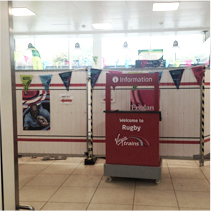
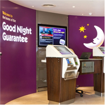
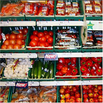

Thoughts & insights on customer experience (amongst other things)

So, the Home Nations are out of the Rugby World Cup following failure, white-washes, controversy, and the embarrassing title of the first Rugby World Cup hosts to go out in the pool stages. There is no denying that the Northern Hemisphere performances were disappointing and that Southern Hemisphere Rugby is an entirely different game...
Telecoms and Energy giants recently found themselves hitting the headlines again for their lack of openness with their customers. EE are facing a £1m fine for not providing customers with information about their rights to take complaints to an independent body. Meanwhile, the Big 6 energy firms have faced criticism from the Competition...

There are reams of Customer Experience articles stating organisational survival depends upon delighting customers and going beyond their expectations. But, as customers do we honestly expect to be delighted with every interaction we have and with every purchase we make? The reality is, most of us would just like to get the experience...

How times have changed. Listening to a recent radio article on Tesco's record £6.4bn loss, a lady commented "I shop there because it is nearest to me, but I wouldn't tell anyone". With Sainsbury's also posting their first loss in ten years, and Morrison's losing market share and profit, where did it go wrong for the big four?...